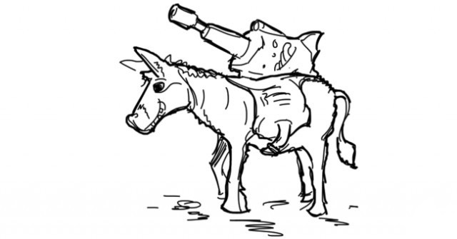

Привет, меня зовут Сережа и я хочу быть разработчиком.
Все началось еще с детства, после просмотра Swordfish. Помните там Хью Джекман должен был взломать банк с пушкой у виска?
Хакни мне банк за 60 секунд.
К сожалению, в школе максмум, что мы делали, это писали непонятные программы в 10 строк на Turbo Pascal.
Окончив школу с золотой медалью и поступив в Харьковский Национальный Университет Радиоэлектроники я встретил прекрасного преподавателя, который научил меня первому языку - C++.
Весь первый курс был потрачен на написание лабораторных всему потоку и реализации каких-то задач, которые сам и придумывал. Была прочитана куча документации, книг и статей. Основы были изучены, три столба ООП были преодолены, змейка и Space Invaders на OpenGL двигались как и надо, но что-то подсказывало, что это все равно не мое.
С тех пор перепробовал C#, Java, Python. Учил основы, кодил десктопные приложения. Попробовал Android.
Нахожусь в поисках
Пока наконец не начал двигаться в сторону веба. Начальные знания HTML/CSS уже были, поэтому попробовал PHP. Больше не пробовал, точно не мое. Java для сервера? Ну может, но какая-то она все равно не такая. Синтаксис у C# покрасивее, и плюсы больше напомниает, но это Майкрософт и виртуальная машина только для винды.
Кто-то когда то назвал шарп мощной лазерной пушкой, установленной на тщедушном ослике. И да, без ослика она практически не работает.